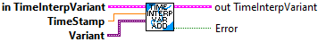
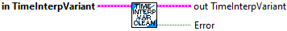
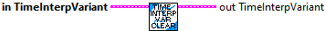
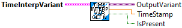
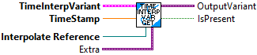
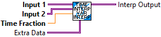
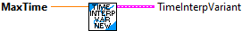
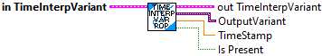
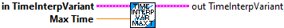

Add a sample to the buffer. Only one value for a given time is allowed to exist. New values provided at the exact time of an existing value replace the existing value.
Inputs:
- In TimeInterpVariant -- Time Interp data cluster
- Time -- The time stamp of the sample (seconds)
- Value -- The Variant value. Any data type can be provided to this terminal. It is converted to a variant.
Outputs:
- out TimeInterpVariant -- Updated Time Interp data cluster

Removes samples older than our current history size.
Inputs:
- In TimeInterpPose2d -- Input data cluster.
Outputs:
- Out TimeInterpPose2d -- Updated data cluster.
- Error -- Returns TRUE if an error occured.

Removes all samples from the history buffer.
Inputs:
- In TimeInterpPose2d -- Input data cluster.
Outputs:
- Out TimeInterpPose2d -- Updated data cluster.

Get the newest sample
Inputs:
- TimeInterpVariant -- Input data cluster
Outputs
- OutputVariant -- Newest Variant.
- TimeStamp -- Time for this sample (seconds)
- IsPresent -- Returns TRUE if the buffer contains any data

Sample the buffer at the given time.
Inputs:
- TimeInterpVariant -- Input data cluster
- TimeStamp -- Time at which to sample (seconds)
Outputs
- OutputPose -- Sampled Variant. This is an exact value if there is a sample in the buffer at this time. Otherwise the value is interpolated. A custom routine will need to be called to extract the custom data from the variant.
- IsPresent -- Returns TRUE if the buffer contains data as far back as TimeStamp.


Create the data cluster for a TIME_INTERPOLATABLE_VARIANT
The TimeInterpolatableVariant provides an easy way to estimate past measurements. One application might be in conjunction with the DifferentialDrivePoseEstimator, where knowledge of the robot pose at the time when vision or other global measurement were recorded is necessary, or for recording the past angles of mechanisms as measured by encoders.
The TIME_INTERPOLATABLE_VARIANT stores and returns Variant values. Because this routine stores and retrieves Variant values, several custom routines will need to be provided to effectively use this set of functions:
-- A TypeDef for the cluster containing the data to be sotred.
-- A routine to pack data into the custom TypeDef
-- A routine to unpack the variant data back to the custom data type.
-- A routine to interpolate two values. A sample routine,
TimeInterpVariant_Interpolate.vi, is provided to use as a template
to create the custom interpolation routine.
Inputs:
- Max Time -- The maximum time (seconds) of data to store in the buffer.
Outputs:
- Time InterpVariant -- Created data structure cluster

Sample the buffer at the given time.
Inputs:
- TimeInterpVariant -- Input data cluster
- TimeStamp -- Time at which to sample (seconds)
Outputs
- OutputPose -- Sampled Variant. This is an exact value if there is a sample in the buffer at this time. Otherwise the value is interpolated. A custom routine will need to be called to extract the custom data from the variant.
- IsPresent -- Returns TRUE if the buffer contains data as far back as TimeStamp.

Sets the maximum time period that should be stored in the buffer.
Inputs:
- In TimeInterpVariant -- Input data cluster.
- Max Time -- Maximum time period to store in the buffer (seconds)
Outputs:
- Out TimeInterpVariant -- Updated data cluster.